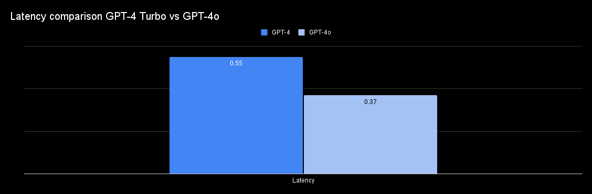
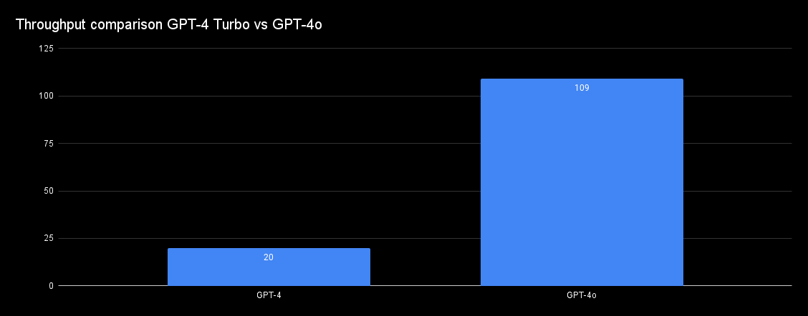
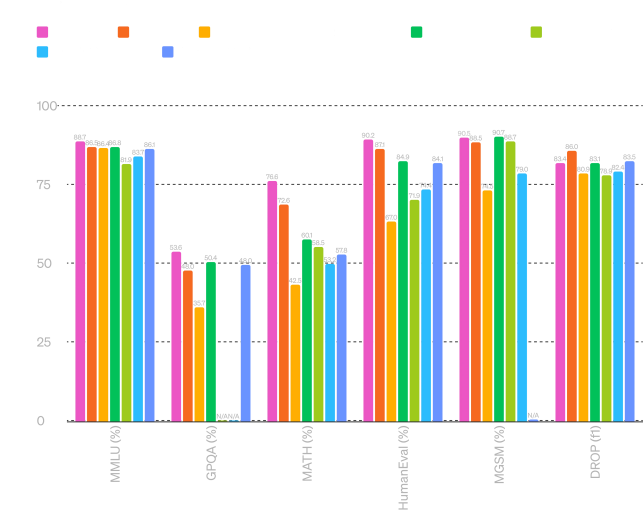
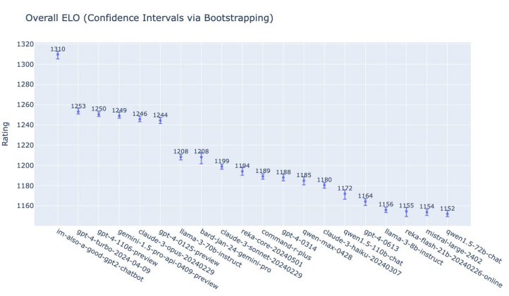
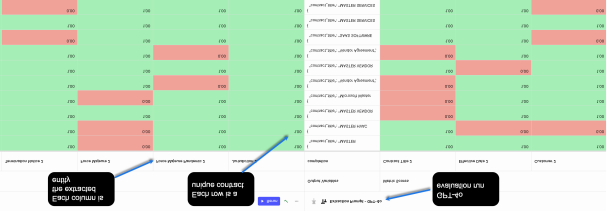
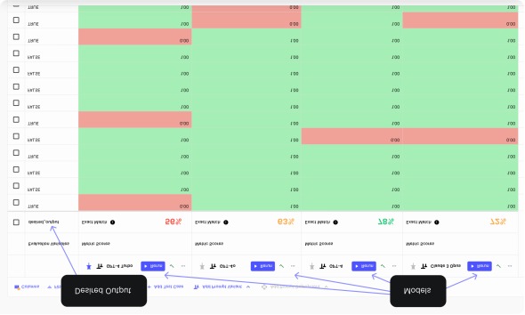
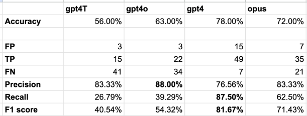
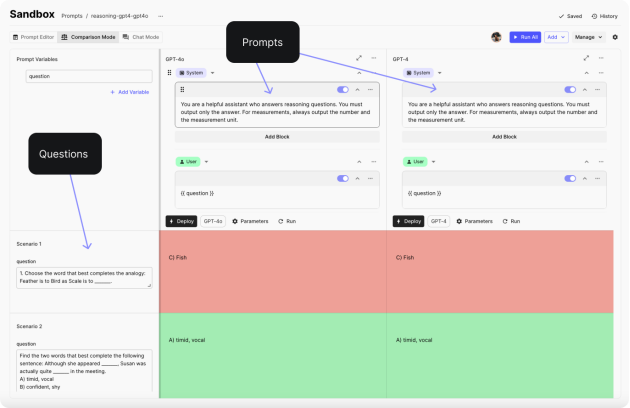
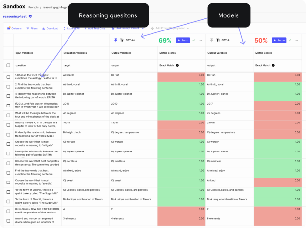
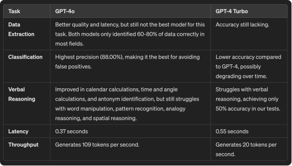

本周，OpenAI 发布了 GPT-4o，这是一种速度多模式模型，与最新的 GPT-4 Turbo 版本相比，提高了 2 倍，成本降低了 50%，速度限制提高了 5 倍。
它具有令人印象深刻的多模式能力；与这个模型完美结合，你可能会忘记它是人工智能（就像她一样）。
和许多人一样，我们很高兴看到这些进步，因此我们在三个任务上进行了一项实验，比较 GPT-4o 及其前身：分类、数据提取和语言推理。
我们了解 GPT4o 在所有三项任务上都承担 GPT-4 Turbo，但是：
· 对于复杂的数据提取任务，准确性是关键，这两个模型仍然达不到标准。
· 对于客票分类，GPT4o 与 GPT4-Turbo 相比具有最好的精度。与 Claude 3 Opus 和 GPT-4 相比，它仍然具有最好的精度。
· 在推理方面，GPT-4o在日历计算、时间和角度计算、反义词识别等任务上进行了改进。然而，它在文字处理、模式识别、类比推理和空间推理方面仍然存在困难。
请阅读以下部分的完整分析。
本次分析的主要重点是分析 GPT-4o 相对于最新 GPT-4 Turbo 模型的改进 ( gpt-4-0613)。
我们查看标准基准、社区运行的数据，并进行一系列我们自己的小规模实验。
在接下来的两节中，我们将介绍：
· 性能对比 （Latency、 Throughput）
· 标准基准比较 （例如：GPT-4o 与 GPT-4 之间数学任务的报告性能如何？）
然后，我们进行小型实验并比较三个任务的模型：
· 数据提取
· 分类
· 语文推理
您可以使用门户的“目录”面板跳至您最感兴趣的部分，或逐级逐步探索 GPT-4 和 GPT-4o 之间的完整比较。
与预期一样，GPT-4o 的延迟低于 GPT-4 Turbo：

在吞吐量方面，之前的 GPT 模型是落后的；最新的 GPT-4 Turbo 每秒仅生成 20 个代币。然而，GPT-4o 已经做出了重大改进，每秒可生成 109 个代币。
即使有了这样的改进，GPT4o 仍然不是最快的模型（Groq 上托管的 Llama 每秒生成 280 个代币），但其先进的功能和推理使其成为实时 AI 功能的不错选择。

当新模型发布时，我们从技术报告中报告的基准数据中了解它们的功能。下图将GPT-4o在标准基准测试中的性能与排名前五的母模型和一个开源模型进行了比较。

比较7个模型在6个推理、数学、编码等方面的基准。
该图表的主要要点：
· 在推理能力基准 MMLU 上，GPT-4o 得分为 88.7%，比 GPT-4 Turbo 提高了 2.2%。推理能力仍然是所有 GPT 模型的标志性功能，始终使它们与众不同。我们将在下一节中测试这些改进的影响。
· GPT-4o在GPQA（生物学、物理和化学）、数学和HumanEvals （编码）方面显示出了显着的改进。
· 在多语言小学数学基准 MGSM 上，GPT-4o 显示出与最高能力模型 Claude 3 Opus 类似的功能。
· 有趣的是，在需要复杂推理和算术的 DROP 数据集上，GPT-4 Turbo 的性能优于新的 GPT-4o，尽管 GPT-4o 是该模型的增强版本。
在GPT-4o发布之前，OpenAI团队“秘密”在LMSYS Chatbot Arena中添加了该模型，因为im-also-a-good-gpt2-chatbot.该平台允许提示两个匿名语言模型，投票选出最佳响应，然后表明他们的身份。
GPT-4o 目前是该排行榜中最先进的模型，获得了令人印象深刻的 1310 ELO 排名，与前 5 名性能模型相比有显着提升。

基准和众包评估很重要，但它们并不能说明全部情况。要真正了解您的人工智能系统的性能，您必须深入研究并针对您的例子评估这些模型。
现在，让我们在三个任务上比较这些模型：
任务1：提取数据
对于此任务，我们将比较 GPT-4 Turbo 和 GPT-4o 从合约中提取关键信息的能力。我们的数据集包括公司与客户之间的主服务协议 (MSA)。合同的长度各不相同，有的短至5页，有的长至50页。
在本次评估中，我们将提取合同标题、客户名称、供应商名称、终止条款详细信息、是否存在不可抗力等共12个字段。
您可以查看我们的原始提示和我们想要的模型返回的JSON模式：
您是一名合同审核员，致力于帮助审核并购交易后的合同。您的目标是分析提供的文本并返回关键数据点、重点关注合同条款、风险和其他重要特征。您应该仅使用提供的文本返回数据。
根据提供的文本，使用架构创建有效的 JSON：
{
Contract_title: string, // 协议名称
customer: string, // 这是签署协议的客户
vendor: string, // 这是提供服务的供应商
effective_date: Date, // 格式为 m/d/yyyy
initial_term: string, // 协议的长度（例如1年、5年、18个月等）
extension_renewal_options: string, // 合同中是否有延期或续订选项？
auto_renewal: string, // 该协议是否设置为自动续订？
Termination_clause: string, // 合同全文，包含有关如何终止协议的信息
Termination_notice: string, // 在协议终止之前必须发出通知的天数。仅包含号码。
force_majeure: string, // 协议中是否存在不可抗力条款？
force_majeure_pandemic: string, // 不可抗力是否包括病毒爆发、流行病或流行病事件？
assignment_allowed: string, // 是否有语言指定是否允许赋值？仅用一句话回答。
司法管辖区：字符串，//协议的司法管辖区或管辖法律（例如蒙大拿州、佐治亚州、纽约州）。如果是一个州，则仅回答州名称。
}
合同：
”“”
{{合同}}
”“”
我们收集了10份合约的真实数据，对GPT- 4 Turbo 和 GPT-4 进行测试，以下是我们评估报告的结果：

每个提示针对所有 12 个指标的评估表。
我们从合约中提取了12条信息：
· GPT-4o在12个字段中的6个字段中表现优于GPT-4 Turbo，在5个字段中保持相同的结果，而在1个字段中表现出性能下降。
· 从绝对角度来看，GPT-4和GPT-4o在大多数领域都只正确识别了60-80%的数据。对于精度很重要的复杂数据提取任务，这两个模型都达不到标准。有一种方法可以通过先进的提示技术（例如少击或思维链提示）获得更好的结果。
· 正如预期的那样，GPT-4o 在 TTFT（第一个代币的时间）上比 GPT-4 Turbo 快 50-80%，这有助于进一步 GPT-4o 在这一头对头比较中。
GPT-4o，与 GPT-4 Turbo 相比，其质量和延迟更好。然而，这可能仍然不是最适合这个工作的模型。需要进一步评估和及时测试来确定最佳选择。
我们运行评估来测试模型的是否与100个标记测试样本的真实数据输出相匹配，结果如下：

要点：
· 与 GPT-4 Turbo 相比，GPT-4o 性能提升了 7%。另一方面，GPT-4 达到了令人印象深刻的准确率 78%，Claude 3 Opus 达到了 72%，准确性很重要，但不是唯一需要考虑的指标，特别是在错误报告（错误未解决的票证标记为已解决）可能导致客户不满意的情况下。然后我们计算了这两个模型的准确率、记忆率和 f1 分数，同时还添加了 Claude 3 Opus 和 GPT-4 以进行良好的日常：

比较 GPT-4T、GPT4o、GPT4 和 Claude 3 Opus 的准确率、记忆率和 f1 分数。
要点：
· GPT4o：GPT4o 具有最高的准确率（88.00%），是避免误报的最佳选择，确保解决已的工单确实得到解决。
· GPT-4 Turbo 和 Claude 3 Opus：这两款型号也都具有工作（83.33%），成为很好的替代产品。然而，与 GPT4o 相比，它们的响应率较低。
· GPT-4：具有最高的识别率（87.50%）和良好的 F1 分数（81.67%），但其准确度（76.56%）低于其他模型。这可能会导致更多的误报，在这种情况下情况下这是不太理想的。
GTP-4o 表现出比所有其他模型更好的精度。这将是我们执行此任务的首选模型。同样重要的是要强调的是，决定使用哪个模型取决于您的任务以及您想要的准确结果性、准确度和响应率之间取得的平衡。还值得一提的是，您可以使用CoT等高级提示技术来改进特定案例的模型结果。
虽然 GPT-4 Turbo 在许多推理任务中表现出色，但我们之前的评估表明它在处理语言推理问题上表现不佳。据 OpenAI 称，与 GPT-4 Turbo 相比，GPT-4o 在推理任务方面表现不佳出显着改进。
GPT-4o真的更好吗？
为了看看新模型是否更好，我们选择了一组 16 个言语推理问题作为测试的基石。
这是一个谜语示例及其来源：
言语推理问题：
1. 选择最能完成这一类比的词：羽毛之于鸟，正如鳞片之于_______。
A) 爬行动物
B) 狗
C) 鱼
D) 植物答案： 爬行动物
下面是我们在Vellum提示环境中运行的初始测试的屏幕截图：

比较两个推理任务的模型。
现在，让我们对所有 16 个推理问题进行评估。
在下例中，您可以看到GPT-4o表现出了比其前身更好的推理能力，达到了69%的准确率，而GPT-4 Turbo的准确率达到了50%。

从我们给模型提供的示例中，我们可以看到 GPT-4o 在以下推理任务中变得更好：
· 日历计算：准确识别特定日期重复的时间。
· 时间和角度计算：精确计算时钟上的角度。
· 词汇（反义词识别）：有效识别反义词并理解词义。
而且，它仍然难以完成以下推理任务：
· 操作单词：字母更改后难以识别和生成有意义的单词。
· 模式识别：难以识别和应用复杂的重排模式。
· 类比推理：准确理解并匹配类比的问题。
· 空间推理：可视化空间运动和计算距离的问题。
解答者： GPT4o 它肯定更好，但在某些推理任务上仍然遇到困难。
在本文中，我们研究了标准基准，进行了小规模实验并研究了独立评估。以下是我们的调查结果摘要。

每个模型针对特定任务的结论表。
· 结论：
· 数据提取： GPT-4o 显示出比 GPT-4 Turbo 更好的性能，但在复杂任务的精度方面仍然存在不足。
· 分类： GPT-4o 具有最高的精度，使其成为避免误报的最佳选择。GPT-4 Turbo 表现出较低的精度。
· 言语推理： GPT-4o 在某些推理任务上有了显着的改进，但严重需要改进的地方。GPT-4 Turbo 在这些任务中表现得更加纠结。
· 延迟： GPT-4o 的延迟较低，与 GPT-4 Turbo 相比，响应时间更快。
· 吞吐量： GPT-4o 生成令牌的速度要快，吞吐量为每秒 109 ，而 GPT-4 Turbo 的吞吐量为每秒 20 。